Spring的优缺点
SpringBoot的特点
SpringBoot的核心功能
SpringBoot的环境
application.properties、application.yml配置文件的配置
1. 了解SpringBoot
在这一部分，我们主要了解以下3个问题：
- 什么是SpringBoot
- 为什么要学习SpringBoot
- SpringBoot的特点
1.1.什么是SpringBoot
SpringBoot是Spring项目中的一个子工程，与我们所熟知的Spring-framework 同属于spring的产品:
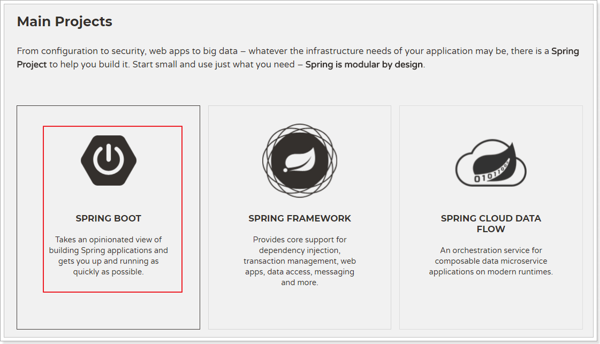
我们可以看到下面的一段介绍：
Spring Boot makes it easy to create stand-alone, production-grade Spring based Applications that you can “just run”.
We take an opinionated view of the Spring platform and third-party libraries so you can get started with minimum fuss. Most Spring Boot applications need very little Spring configuration.
翻译一下：
Spring Boot你只需要“run”就可以非常轻易的构建独立的、生产级别的spring应用。
我们为spring平台和第三方依赖库提供了一种固定化的使用方式，使你能非常轻松的开始开发你的应用程序。大部分Spring Boot应用只需要很少的配置。
其实人们把Spring Boot称为搭建程序的脚手架。其最主要作用就是帮我们快速的构建庞大的spring项目，并且尽可能的减少一切xml配置，做到开箱即用，迅速上手，让我们关注于业务而非配置。
我们可以使用SpringBoot创建java应用，并使用java –jar 启动它，就能得到一个生产级别的web工程。
1.2.为什么要学习SpringBoot
Spring的优点分析
pring是Java企业版（Java Enterprise Edition，JEE，也称J2EE）的轻量级代替品。无需开发重量级的Enterprise JavaBean（EJB），Spring为企业级Java开发提供了一种相对简单的方法，通过依赖注入和面向切面编程，用简单的Java对象（Plain Old Java Object，POJO）实现了EJB的功能。
Spring的缺点分析
虽然Spring的组件代码是轻量级的，但它的配置却是重量级的。一开始，Spring用XML配置，而且是很多XML配置。Spring 2.5引入了基于注解的组件扫描，这消除了大量针对应用程序自身组件的显式XML配置。Spring 3.0引入了基于Java的配置，这是一种类型安全的可重构配置方式，可以代替XML。
所有这些配置都代表了开发时的损耗。因为在思考Spring特性配置和解决业务问题之间需要进行思维切换，所以编写配置挤占了编写应用程序逻辑的时间。和所有框架一样，Spring实用，但与此同时它要求的回报也不少。
除此之外，项目的依赖管理也是一件耗时耗力的事情。在环境搭建时，需要分析要导入哪些库的坐标，而且还需要分析导入与之有依赖关系的其他库的坐标，一旦选错了依赖的版本，随之而来的不兼容问题就会严重阻碍项目的开发进度。
java一直被人诟病的一点就是臃肿、麻烦。当我们还在辛苦的搭建项目时，可能Python程序员已经把功能写好了，究其原因主要是两点：
复杂的配置
项目各种配置其实是开发时的损耗， 因为在思考 Spring 特性配置和解决业务问题之间需要进行思维切换，所以写配置挤占了写应用程序逻辑的时间。
混乱的依赖管理
项目的依赖管理也是件吃力不讨好的事情。决定项目里要用哪些库就已经够让人头痛的了，你还要知道这些库的哪个版本和其他库不会有冲突，这也是件棘手的问题。并且，依赖管理也是一种损耗，添加依赖不是写应用程序代码。一旦选错了依赖的版本，随之而来的不兼容问题毫无疑问会是生产力杀手。
而SpringBoot让这一切成为过去！
1.3.SpringBoot的特点
SpringBoot对上述Spring的缺点进行的改善和优化，基于约定优于配置的思想，可以让开发人员不必在配置与逻辑业务之间进行思维的切换，全身心的投入到逻辑业务的代码编写中，从而大大提高了开发的效率，一定程度上缩短了项目周期。Spring Boot 就是Spring++。
Spring Boot 主要特征是：
- 创建独立的spring应用程序
- 直接内嵌tomcat、jetty和undertow（不需要打包成war包部署）
- 提供了固定化的“starter”配置，以简化构建配置
- 尽可能的自动配置spring和第三方库
- 提供产品级的功能，如：安全指标、运行状况监测和外部化配置等
- 绝对不会生成代码，并且不需要XML配置
- 为基于Spring的开发提供更快的入门体验
- 开箱即用，没有代码生成，也无需XML配置。同时也可以修改默认值来满足特定的需求
- 提供了一些大型项目中常见的非功能性特性，如嵌入式服务器、安全、指标，健康检测、外部配置等
- SpringBoot不是对Spring功能上的增强，而是提供了一种快速使用Spring的方式
总之，Spring Boot为所有 Spring 的开发者提供一个开箱即用的、非常快速的、广泛接受的入门体验
更多细节，大家可以到官网查看。
1.4.SpringBoot的核心功能
起步依赖
起步依赖本质上是一个Maven项目对象模型（Project Object Model，POM），定义了对其他库的传递依赖，这些东西加在一起即支持某项功能。
简单的说，起步依赖就是将具备某种功能的坐标打包到一起，并提供一些默认的功能。
自动配置
Spring Boot的自动配置是一个运行时（更准确地说，是应用程序启动时）的过程，考虑了众多因素，才决定Spring配置应该用哪个，不该用哪个。该过程是Spring自动完成的。
2.快速入门
接下来，我们就来利用SpringBoot搭建一个web工程，体会一下SpringBoot的魅力所在！
环境要求：
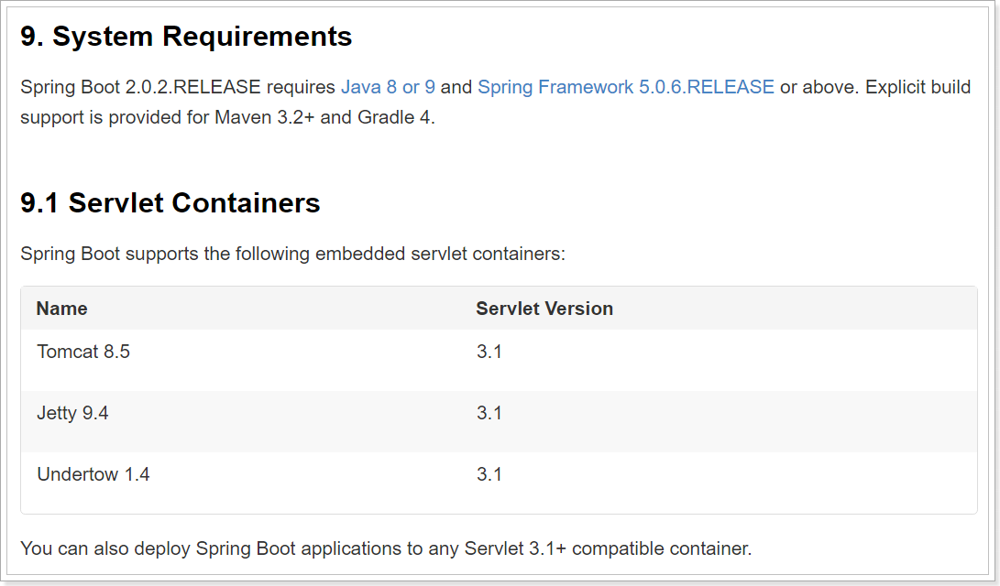
2.1.创建工程
我们先新建一个空的demo工程，如下：
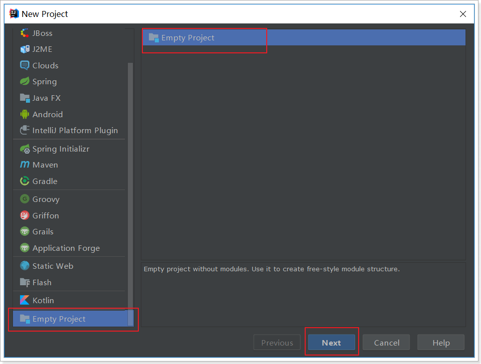
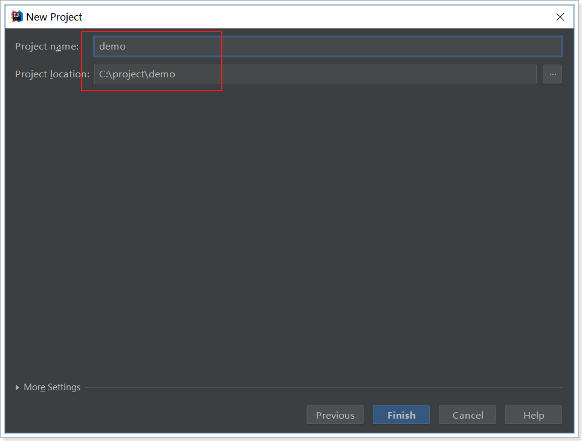
创建以moduel：
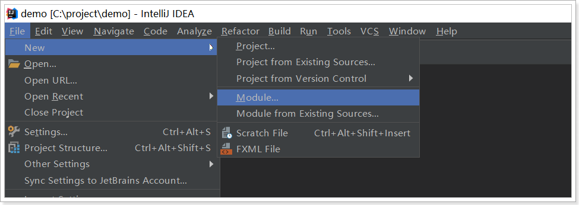
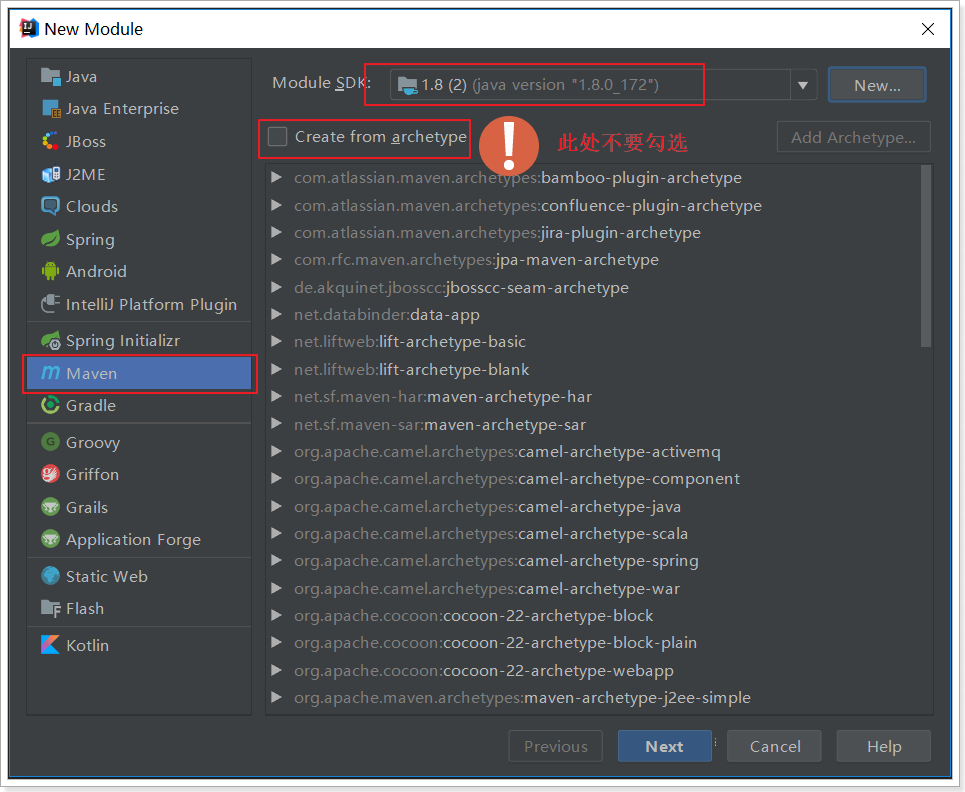
填写坐标信息：
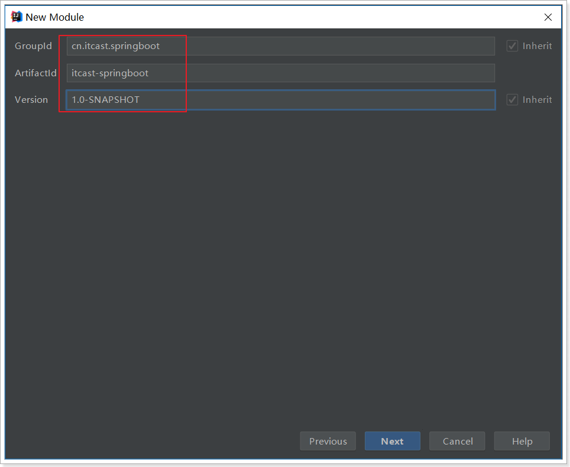
目录结构：
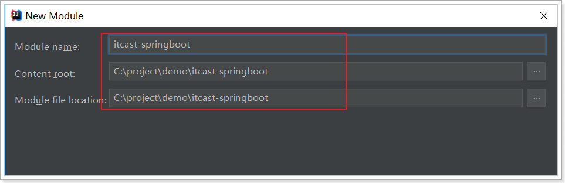
创建完成后的目录结构：
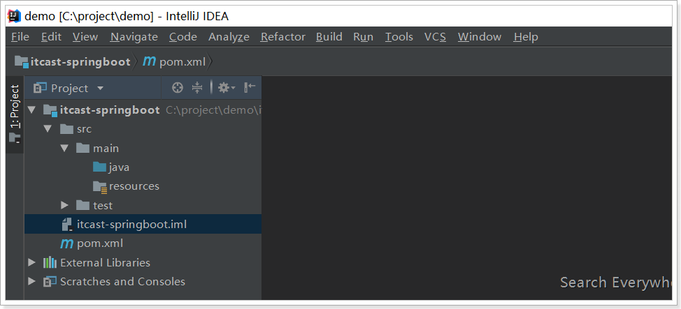
2.2.引入依赖
看到这里很多同学会有疑惑，前面说传统开发的问题之一就是依赖管理混乱，怎么这里我们还需要管理依赖呢？难道SpringBoot不帮我们管理吗？
别着急，现在我们的项目与SpringBoot还没有什么关联。SpringBoot提供了一个名为spring-boot-starter-parent的工程，里面已经对各种常用依赖（并非全部）的版本进行了管理，我们的项目需要以这个项目为父工程，这样我们就不用操心依赖的版本问题了，需要什么依赖，直接引入坐标即可！
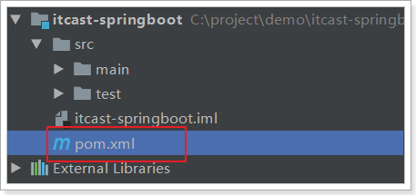
<?xml version="1.0" encoding="UTF-8"?>
<project xmlns="http://maven.apache.org/POM/4.0.0"
xmlns:xsi="http://www.w3.org/2001/XMLSchema-instance"
xsi:schemaLocation="http://maven.apache.org/POM/4.0.0 http://maven.apache.org/xsd/maven-4.0.0.xsd">
<modelVersion>4.0.0</modelVersion>
<groupId>cn.itcast.springboot</groupId>
<artifactId>itcast-springboot</artifactId>
<version>1.0-SNAPSHOT</version>
<!-- 所有的springboot的工程都以spring父工程为父工程 -->
<parent>
<groupId>org.springframework.boot</groupId>
<artifactId>spring-boot-starter-parent</artifactId>
<version>2.0.6.RELEASE</version>
</parent>
<dependencies>
<dependency>
<groupId>org.springframework.boot</groupId>
<artifactId>spring-boot-starter-web</artifactId>
</dependency>
</dependencies>
</project>2.3.编写HelloController
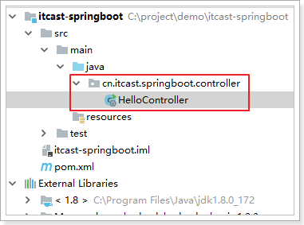
代码：
package uestc.zhangkx.controller;
import org.springframework.boot.SpringApplication;
import org.springframework.boot.autoconfigure.EnableAutoConfiguration;
import org.springframework.web.bind.annotation.GetMapping;
import org.springframework.web.bind.annotation.RequestMapping;
import org.springframework.web.bind.annotation.RestController;
/**
* @author zhangkx
*/
@RestController
@RequestMapping("/hello")
@EnableAutoConfiguration
public class HelloController {
@GetMapping("show")
public String test(){
return "hello springboot 1 ";
}
public static void main(String[] args) {
SpringApplication.run(HelloController.class,args);
}
}
2.4.启动测试
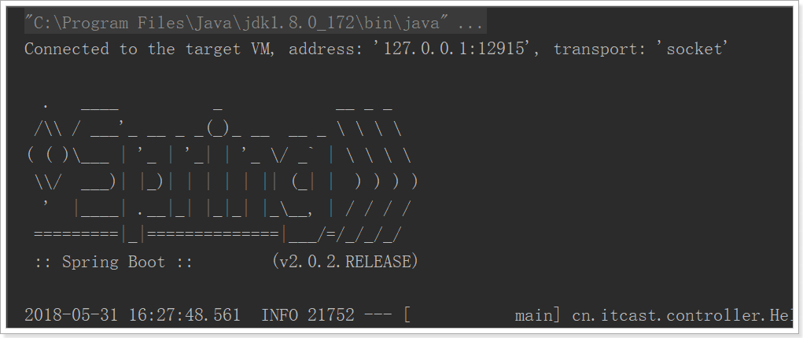
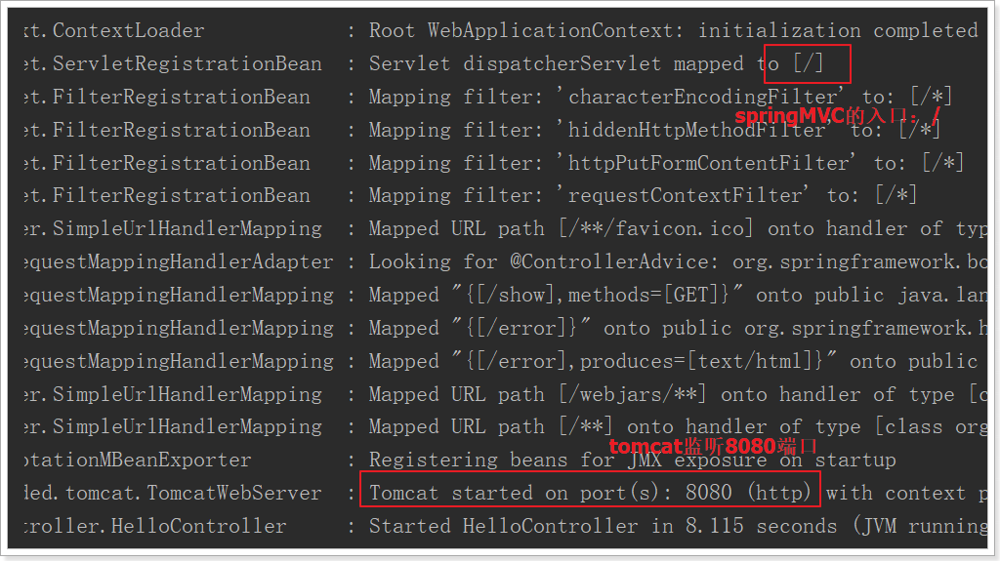
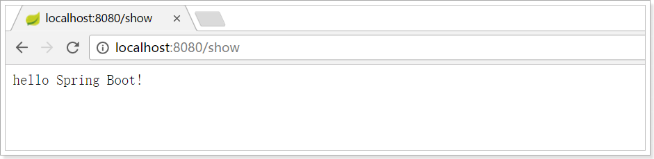
bingo！访问成功！